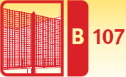
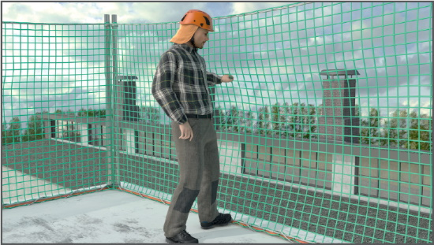
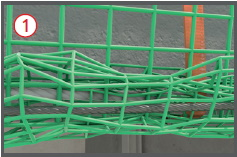
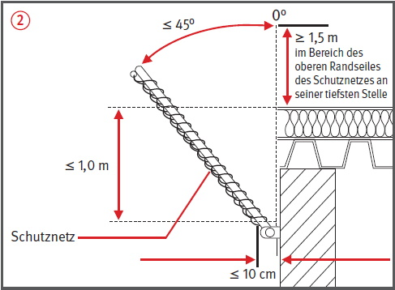
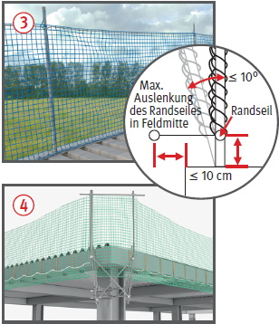
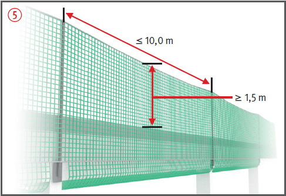
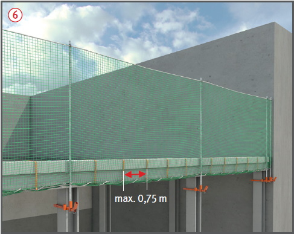
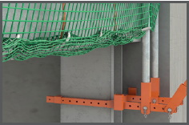

Randsicherungen
|

|

Gefährdungen
- Fehlende Sicherungsmaßnahmen an den Dach- und Gebäudeaußenkanten können Absturzunfälle zur Folge haben.
Allgemeines
- Randsicherungen verhindern den tieferen Absturz von Personen an Decken- und Dachkanten von Flächen mit einem Neigungswinkel von ≤ 22,5°.
- Sie bestehen aus Randsicherungspfosten, Fußpunkten, Schutznetzen, ggf. Seile
 und Systemelementen. Die Absturzkante liegt hierbei nicht mehr als 40 m über dem Gelände.
und Systemelementen. Die Absturzkante liegt hierbei nicht mehr als 40 m über dem Gelände.
Schutzmaßnahmen
- Nur Systeme verwenden, für die ein Brauchbarkeitsnachweis (siehe Grundsatz für die Prüfung von Randsicherungen) vorliegt.
- Vor der Montage statische und konstruktive Voraussetzungen der Befestigungspunkte am Bauwerk klären.
- Montage gemäß Aufbau- und Verwendungsanleitung des Herstellers. Besonderheiten an Gebäudeecken oder beim Endfeld des Randsicherungssystems sind zu beachten
 , .
, .
- Auf-, Um- und Abbau nur von besonderen Arbeitsplätzen aus vornehmen, z.B. Hubarbeitsbühne, Fahrgerüst.
- Randsicherungspfosten sollen senkrecht stehen; aus baulichen Gründen sind Neigungen bis 45° möglich
 .
.
- Wenn Randsicherungen auf dem Dach stehen, Randsicherungen bis zu einem Neigungswinkel ≤ 10° oder nach der Herstellerangabe einsetzen
 .
.
- Abstand der Randsicherungspfosten max. 10 m
 .
.
- Die Länge des Randsicherungspfostens ist so zu wählen, dass der Abstand des oberen Randseiles des Schutznetzes von der Absturzkante an seiner tiefsten Stelle das Maß von 1,5 m nicht unterschreitet .
- Tiefster Punkt des durchhängenden Schutznetzes unter der Absturzkante max. 1,0 m.
- Horizontaler Abstand zwischen Schutznetz und Bauwerk max. 10 cm .
- Schutznetze so untereinander verbinden, dass keine Zwischenräume > 10 cm auftreten.
- Schutznetz im unteren Bereich mindestens alle 75 cm an Bauteilen (z.B. gespanntes Seil) befestigen .

Randseil des Schutznetzes mit zusätzlichem Stahlseil um den unteren Rand des Randsicherungssystems zu spannen.



Randsicherung unterhalb der Dachfläche mit horizontalem Netz.

Randsicherung im unteren Bereich an Bauteilen befestigt.

Doppelpfostenkonstruktion am Endpfosten
Prüfungen
- Prüfung durch eine "zur Prüfung befähigte Person" des Erstellers nach Fertigstellung und vor Übergabe an den Nutzer, um den ordnungsgemäßen Zustand festzustellen (Nachweis-Prüfprotokoll).
- Jeder Nutzer hat eine Inaugenscheinnahme und erforderlichenfalls eine Funktionskontrolle durch eine "qualifizierte Person" vor der Verwendung auf offensichtliche Mängel durchzuführen (Nachweis-Checkliste).
08/2021